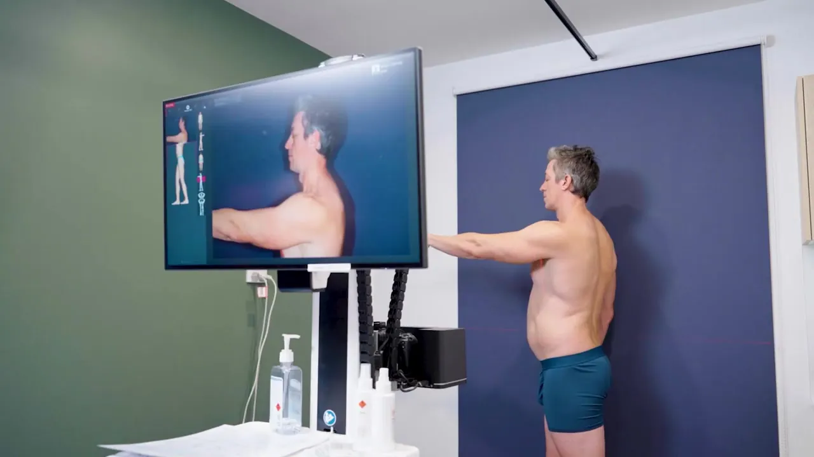
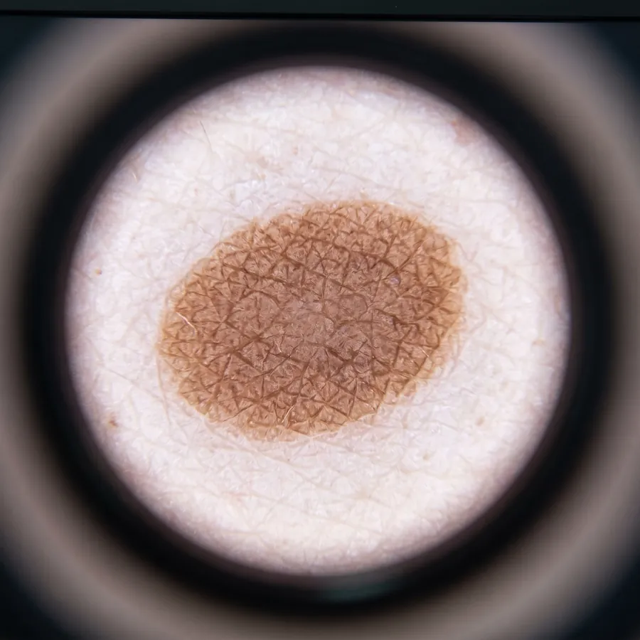
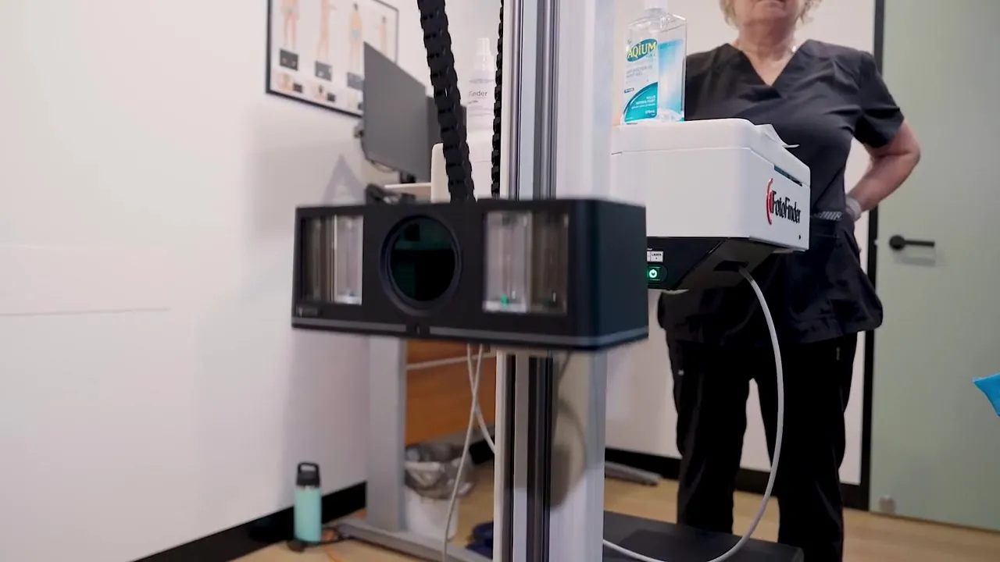
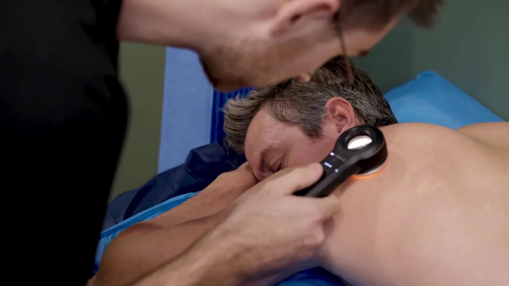
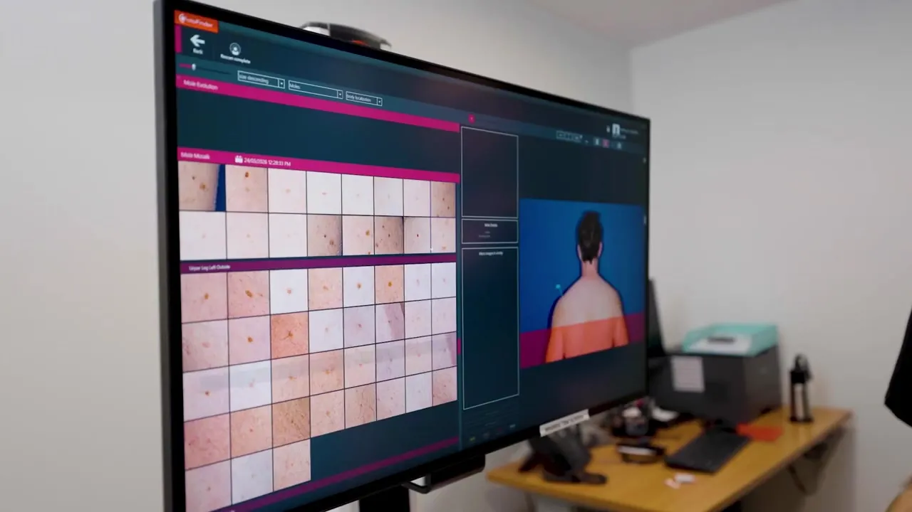
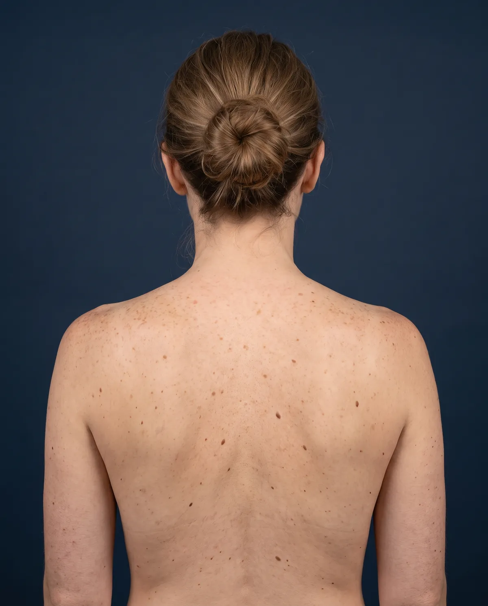
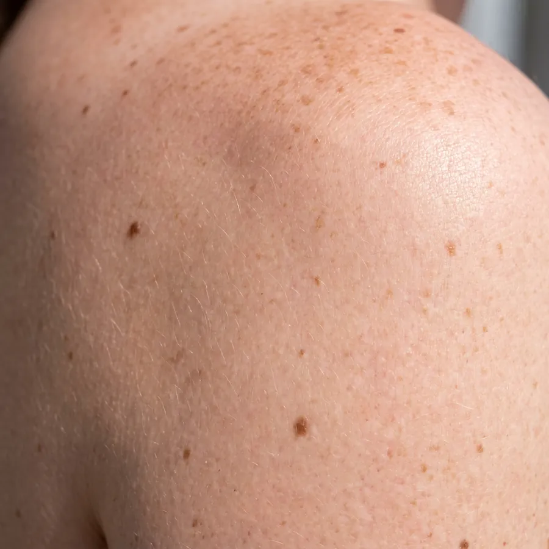

Dr Andrew Ganter
MBBS, FRACGP. Principal GP
Founded Sunstate in 2009 after more than a decade in general practice. More than 28 years’ experience, with a special interest in the detection and management of skin cancers.
Skin Cancer Clinic, Victoria Point
A doctor-led skin cancer check, with every spot on your body photographed, tracked and compared over time by the FotoFinder ATBM master.



A standard skin check relies on what your doctor can see on the day. AI-driven Total Body Mapping adds a precise, photographic memory of your skin, so the next check starts with a comparison rather than a guess.
At Sunstate Family Practice & Skin Cancer Clinic we use the FotoFinder ATBM master, an automated total body dermoscopy system. It photographs your skin in standardised positions, then lines up every new image against your baseline so even subtle changes stand out.
Both appointments are doctor-led. The difference is how much of your skin’s history we capture and keep for next time.
Your GP examines your skin with a dermatoscope, a magnifying light that reveals structures invisible to the naked eye, and decides which spots are reassuring and which need a closer look.

Everything in a skin check, plus comprehensive photographic imaging with the FotoFinder ATBM master. Your images become a baseline that future visits are measured against.

Not sure which to choose? Book a skin check and your GP will tell you whether mapping suits your situation.
Book onlineThis is how Bodyscan compares two visits. Switch between them to watch the system sort every mole into unchanged, changed or new.
Illustration only. Real results are reviewed by your GP, who decides whether a spot needs monitoring, a closer dermoscopic look or removal.

Imaging, examination and advice in a single visit. You stay in plain underwear, with gowns and a chaperone available whenever you would like them.
Book Total Body MappingA trained team member guides you through a series of standard poses in front of the ATBM master. The automated camera captures your whole body in minutes, with consistent angles, distance and lighting every time.
Every mole from the scan is laid out on one screen. At follow-up visits, Bodyscan compares the new images with your baseline and marks spots that are new or have changed.
Your GP examines your skin and takes magnified dermoscopic images of selected spots, so their fine structure can be compared over time in your personal mole gallery.
FotoFinder’s built-in AI gives individual lesions a pre-assessment score, adding a second, consistent set of eyes. It supports your doctor’s judgement and never replaces it.
Your GP talks you through the findings: what to watch, when to come back and what would prompt an earlier review. If a spot needs a biopsy or removal, many can be treated here at the practice.
Queensland has some of the highest rates of skin cancer in the world. Even if you are careful now, your skin may carry damage from years of boating, gardening, sport and school holidays at the beach. Finding a change early means treatment is more likely to be effective.
Because we are a family practice, your doctor can link what they see on your skin with your medications, immune health and history. If you need a dermatologist or skin cancer surgeon, they will arrange a referral.
MBBS, FRACGP. Principal GP
Founded Sunstate in 2009 after more than a decade in general practice. More than 28 years’ experience, with a special interest in the detection and management of skin cancers.
MD, FRACGP
Further training in skin cancer medicine, with special interests including excision of skin lesions.
BSc, MD
Special interest in dermatology and the identification and removal of skin cancers.
BPharm, MBBS (Hons), GradDipSurgAnat, MS
Interested in preventative health and women’s health. Watch Dr Scupham explain Total Body Mapping in our video library.
Short videos from our team, filmed at the practice.

What is Total Body Mapping?
A few simple steps help the camera see your skin clearly.

| Service | Fee | Medicare rebate | Out of pocket |
|---|---|---|---|
| Skin check | $104–$162 | [$__] | [$__] |
| Skin check + body map (same visit) | $214–$272 | [$__] | [$__] |
| Spot check (pending approval) | [$__] | [$__] | [$__] |
Fees depend on appointment length. Medicare rebates depend on the appointment type and your eligibility. Our reception team is happy to explain costs before your visit on (07) 3207 7744.
Total Body Mapping, also called mole mapping or total body photography, uses the FotoFinder ATBM master to take standardised photographs of your whole body. Built-in AI helps flag new and changed spots and gives individual lesions a pre-assessment score. Your GP reviews every result and makes the clinical decisions.
No. The AI is a decision support tool. It highlights spots for attention and compares images over time. Diagnosis and treatment decisions are always made by your doctor.
No. You do not need a referral to see a GP for a skin check. Book online with HotDoc and choose the TBM (Total Body Mapping) + Skin Check appointment type, or call us on (07) 3207 7744.
It is often recommended if you have lots of moles or freckles, fair skin or a history of sunburn, a personal or family history of melanoma, or if your doctor has suggested closer monitoring.
Your GP will recommend an interval based on your personal risk. Many people return every 6 to 12 months so new images can be compared with their baseline.
Your GP will discuss your options, which may include monitoring, a biopsy or removal of the lesion. Many procedures can be done at the practice. If you need specialist care, your GP will arrange a referral.
Images are date-stamped and stored securely with your medical record at the practice, not on personal devices.
Book a skin check or Total Body Mapping online, or call our friendly reception team.
| Monday to Thursday | 7.30am to 6.30pm |
|---|---|
| Friday | 7.30am to 5pm |
| Saturday | 8am to 1pm |
All by appointment.